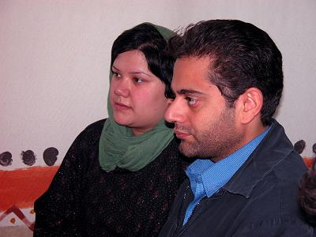

خبر کوتاه بود: «حکم دو سال و نیم حبس دلارام علی را تایید و به دایره اجرای احکام فرستاده اند، پدر دلارام را تهدید کرده اند که اگر دلارام خودش را معرفی نکند حکم جلب دارند و برایش بدتر می شود». روز شنبه 12 آبان ماه نیز از اجرای احکام به زهره ارزنی گفته اند: «که حتا یک ساعت هم او فرصت ندارد و باید هرچه زودتر خود را معرفی کند». زهره ارزنی خواسته بود که حداقل چند روزی به دلارام فرصت بدهند، تا خود را آماده کند و به آنها گفته بود: «دلارام تازه ازدواج کرده، کمی به او فرصت بدهید». اما در برابر صدایی بی فروغ و بی رحم قرار گرفته بود که: دلارام اگر خودش را معرفی نکند «فراری» محسوب می شود،... سنگینی این خبر همه را غافلگیر و شوکه کرد. و این پرسش که چرا؟ به راستی چرا با این عجله، حتا بدون ابلاغ حکم به وکلایش و فقط با ابلاغی شفاهی؟

این پرسشی است که در این چند روزه ذهن همه فعالان کمپین یک میلیون امضاء، را به خود مشغول کرده. به راستی چرا بعد از 2 سال از تجمع 22 خرداد و در حالی که تجمع دیگری هم بعد از آن برگزار نشد، باز هم در اجرای احکام ناعادلانه و غیرقانونی مربوط به تجمع قانونی 22 خرداد، پافشاری می کنند؟ چند فرضیه برای درک این تصمیم غیرقانونی دولت – مردان وجود دارد:
1 - اول آن که بسیاری از فعالان جامعه مدنی در این اندیشه بودند که صدور احکام ناعادلانه و غیرقانونی، در واقع تیغ برنده ای است بالای سر فعالان جنبش زنان تا از «فعالیت» قانونی خود باز بمانند. اما حالا این سئوال پیش آمده که آیا نفس «فعالیت»های خاص (منظور به شکل برگزاری تجمع است) یا «فعالیت» در شکل عام آن؟ برای پاسخ به این پرسش باید بدانیم که فعالان جنبش زنان، پس از 22 خرداد 1385 در میدان هفت تیر دیگر تجمعی برگزار نکرده اند و فعالیت در این حوزه به نوعی تعطیل بوده است، پس چرا می خواهند احکام غیرقانونی شان را به این سرعت اجرا کنند و دلارام را با دستپاچگی و عجله، به زندان ببرند؟ چه خواب شومی برای زنان ایران دیده اند که دلارام باید اولین قربانی آن باشد؟
یک وجه دیگر قضیه آن است که احتمال می رود دولت _ مردان به این نتیجه رسیدند اکثر حاضران تجمع 22 خرداد میدان هفت تیر، هرچند که دیگر تجمعی نگذاشته اند، اما این به مثابه ناامیدی و بازماندن از فعالیت هایشان نیست بلکه فعالیت هایشان را به شکلی دیگر (یعنی در کمپین یک میلیون امضاء) با شادابی و توان بیشتری پی گرفته اند؟ روشن است که بر اثر کسب تجربه و پختگی فعالان، انرژی و نشاط و پتانسیل برآمده از تجمع 22 خرداد به کمپین یک میلیون امضاء، ارتقاء یافت. بنابراین اگر از این زاویه هم نگاه کنیم، به این نتیجه می رسیم که مسئله دولت – مردان، برگزار کردن تجمع یا نکردن نبوده و نیست بلکه به طور کلی «فعالیت» در مسیر احقاق حقوق زنان است که هدف مخالفت و دشمنی آنان است نه صرفا برگزاری تجمع که فقط یکی از ابزارهای متنوع فعالیت است. بنابراین اجرای عجولانه حکم دلارام علی، در واقع تنبیه کل فعالان جنبش زنان است که در کمپین یک میلیون امضاء گرد هم آمدند و گسترش یافتند تا جایی که امروز به بخش فعال و غیرقابل انکار جنبش بزرگ جامعه مدنی ایران تبدیل شده اند.
2 - اما فرضیه دیگر آن است که نیروهای رادیکال و خشن و زن ستیز بر آنند که برای خنثا کردن جنبش یک میلیون امضاء (و با کمک گرفتن از فرمول منسوخ و ضد انسانی «بهترین دفاع، حمله است») دست به حرکتی بی رحمانه علیه جنبش زنان بزنند، یعنی تصویب سریع «لایحه ضدخانواده» که از طرف دولت به مجلس هفتم ارائه شده است. در واقع تصویب این لایحه می تواند دهن کجی بزرگی به خواسته های فراگیر جنبش یک میلیون امضاء باشد و از این رو یک فرضیه این است که آنان می خواهند با تصویب سریع این لایحه، برگ برنده ای در خنثا کردن جنبش، از آن خود سازند، و نشان دهند که فعالیت های موثر و سرنوشت ساز جنبش یک میلیون امضاء، بی مقدار و کم تاثیر است. آیا مجلس هفتم با پذیرش و تصویب این لایحه، نفرین و لعنت ابدی زنان کشور را خواهد پذیرفت؟
البته این تحلیل از زاویه نگاه زن ستیزان است و نه شهروندانی که در این جنبش مدنی فعالیت دارند، چراکه همه ما به روشنی و یقین می دانیم جنبش یک میلیون امضاء فراگیرتر و گسترده تر از آن است که حتا با تصویب این لایحه خنثا شود، اما شاید آنان تصور می کنند با این کار می توانند ضربه ای مایوس کننده بر پیکر این جنبش وارد سازند.
به هر روی، تصویب این لایحه در مجلس با توجه به «پیش بینی حجم وسیع اعتراضات»، باید با تمهیدات و زمینه سازی صورت بگیرد. یعنی به نظر می رسد آنان پیش از تصویب این لایحه می خواهند جنبش یک میلیون امضاء را با اجرای احکام ناعادلانه و قربانی کردن برخی از فعالان جوان این جنبش (مانند اجرای حکم دلارام علی)، دچار آشفتگی و سردرگمی کنند و از این طریق پیش از تصویب این لایحه بخش های فعال و «پا به رکاب» آن را فلج سازند و بعد، طوق خفت تصویب این لایحه را بر گردن مجلس هفتم تحمیل کنند.
3 - فرضیه دیگر آن است که با اجرای حکم دلارام، این دختر جوان تازه عروس، می خواهند جنبش زنان نیز مانند جنبش دانشجویی، جنبش سندیکایی و جنبش معلمان، گروگان هایی در زندان داشته باشد تا به این طریق آن تیغ را بالای سر فعالان جنبش زنان برنده تر نگهدارند و اندیشه برگزاری تجمع را از اساس در میان فعالان جنبش زنان بخشکانند تا این که در آینده اگر هم بخواهند لایحه ضدخانواده را به تصویب برسانند، انگیزه برگزاری تجمع علیه این لایحه (که با قدرت و صراحت از سوی فعالان جنبش زنان و به ویژه از سوی شیرین عبادی مطرح شده) برای همیشه از ذهن فعالان جنبش زنان، زدوده شود. زیرا چهار ماه آینده، ماه های بسیار سرنوشت سازی برای بخش هایی از حاکمیت است و برای آن که این چند ماه باقی مانده تا انتخابات، برایشان بدون کمترین مقاومت از سوی جامعه مدنی پیش برود چنین تمهیداتی را لازم می دانند. از این روست که به نظر می رسد احتمال دارد لایحه ضدخانواده را هرچه سریعتر، از تایید مجلس بگذرانند و سپس التهابات اجتماعی ناشی از آن را «راحت تر» فرونشانند و جنبش زنان را برای انتخابات مجلس پیش رو به کلی خسته و مایوس سازند و به میمنت و مبارکی، انتخابات سراسر مردانه شان را برگزار کنند.
احتمال وقوع همه این فرضیه ها به نظر ممکن می آید. یعنی با اجرای غیرمنتظر حکم دلارام علی، همه این اهداف را می خواهند پیش ببرند. اما در این میان، دولت _ مردان غافل از این هستند که آنان (با همه زور و هیمنه شان) فقط یک طرف معادله اند. طرف دیگر معادله جنبشی از زنان عدالت خواه این مملکت قرار دارد که خواسته هایی کاملا مشروع، انسانی و فراگیر دارد، جنبشی است مسالمت آمیز و با درایت و بردباری، که خلاقانه ترین شیوه های آگاهی رسانی و اعتراض مدنی را در جنبش های اجتماعی معاصر کشف و به کار گرفته است. یعنی جنبش یک میلیون امضاء توانسته حرکتی را در سطح مملکت سازمان دهد که مدافعان نظم موجود پدرسالار، در سرکوب آن به شدت دچار بحران شده اند و نمی دانند چه می توانند با آن بکنند. به طوری که کارشان به جایی رسیده که به در آپارتمان های افراد می روند و از تشکیل جلسات هشت نفره هم می خواهند جلوگیری کنند. اگر این نشانه بحران و سردرگمی آنان نیست پس نشانه چیست؟
بنابراین روشن است که چنین جنبشی تا دهه های آینده نیز می تواند با خلاقیت و شادابی، جوانه بزند و بازتولید شود و ضربات و فشاهای رنگارنگ اعم از تفرقه و سرکوب و تهمت و ترس و بدنامی را به جان بخرد و تا حدودی خنثا سازد. نه فقط دلارام می داند چه می گوید و چه می خواهد، بلکه همه ما تک به تک می دانیم چه می گوییم و چه می خواهیم: ما می خواهیم این قوانین ظالمانه و تحقیرآمیز تغییر کند تا لااقل جایگاه برابر و انسانی در ساختار قوانین پیدا کنیم. این خواسته بزرگی نیست اما با روی گشاده برایش هزینه های بزرگ داده و خواهیم داد و به یقین، روش های خلاق تر و بزرگتری ابداع خواهیم کرد. چرا که با هم هستیم و پشتیبانی یکدیگریم. وقتی شیرین عبادی با صراحت اعلام می کند اگر لایحه ضدخانواده در مجلس تصویب شود ما جلوی مجلس خواهیم آمد، همه ما به روشنی می دانیم که آن روز کنار شیرین عبادی خواهیم بود حتا اگر بسیاری از ما در زندان باشیم و تعدادمان از تعداد انگشتان ورم کرده دستان آن زن محروم و زحمت کشی که امضایش را پای بیانیه کمپین گذاشته، بیشتر نباشد.
تقاص زندانی کردن دلارام را بر سر «لایحه ضدخانواده» تان خواهیم کوبید
ما می دانیم که اجرای عجولانه حکم دلارام برای آن است که این قوانین عقب مانده را تغییر ندهند و لایحه ای عقب مانده تر را در مجلس به تصویب برسانند (حالا این که مجلس هفتم این طوق ننگ و لعنت ابدی را بر گردن بیندازد یا نه، موضوع دیگری است). برای همین اگر دلارام را به حبس ببرید بی شک تمام پتانسیل و خشم ناشی از زندانی کردن یارمان را به نیرویی تبدیل خواهیم کرد و بر سر این لایحه ضدخانواده فرود خواهیم آورد. اگر روناک صفارزاده و هانا عبدی را در بازداشت گاه های مخوف سنندج نگه دارند و اتهامات واهی به آنها بزنند (همانطور که به تک تک فعالان جنبش یک میلیون امضاء می زنند)، زنان حق طلب این مرز و بوم نخواهند گذاشت این لایحه بدون هزینه کردن بسیار برای دولت _ مردان، به تصویب برسد و هرچه از توان و بضاعت مان برآید برای جلوگیری از تصویب آن، انجام خواهیم داد چون می دانیم دلارام ها، روناک ها، نسیم ها، فاطمه ها، زینب ها، مازیارها و... را برای این که به قوانین ظالمانه تمکین کنند به زندان می اندازند.
به روناک اتهامات بی ربط و واهی ارتباط با گروه های سیاسی نسبت می دهند تا همه ما زنان از وحشت این تهمت ها، دچار تزلزل و تردید بشویم و از آنان پشتیبانی نکنیم و سرآخر در برابر این قوانین تمکین کنیم. به فعالان کمپین یک میلیون امضاء تهمت می زنند که از فلان کشور پول می گیرند یعنی که مزدور بیگانه هستیم، غافل از آن که برای فریاد کردن و گفتن از درد و رنج های روزمره زندگی زنان یکی از قصه هایی بوده است که همیشه گفته ایم و حالا در جنبش یک میلیون امضاء، آن را منسجم تر و هماهنگ تر در سطحی عمومی فریاد می کنیم و این نیازی به پول و اخاذی ندارد و اگر برای کپی گرفتن و تکثیر جزوه هایی که سرنوشت مان را در آن نوشته ایم پولی احتیاج داشته باشیم، از سفره زندگی خود می زنیم و برای آن خرج می کنیم.
این قصه گویی ها در کمپین یک میلیون امضاء، در واقع زندگی ماست و ربطی به این دولت داخلی و آن دولت خارجی ندارد. این فریادها بدون آن که گاه خود بخواهیم از جگر و عمق وجودمان برمی خیزد. همه می دانند (و خود آقایان بهتر از همه مطلع هستند) که ما چگونه پنجهزار تومان یا پنجاه هزار تومان به اندازه وسع هر کداممان، از زندگی مان می زنیم و به این کمپین کمک می کنیم ولی باز هم اتهام می زنند. اتهام می زنند که ضداسلام هستیم، هرچند از فتاوی آیت الله صانعی و بجنوردی و خیلی از علمای دیگر بهره می بریم و واقعا نمی دانیم کجای این حرف هایی که می زنیم ضد اسلام است؟ و مگر متوجه نیستند که با نسبت دادن این اتهامات به کمپینی چنین مشروع، بیشتر به اسلام ضربه می زنند تا به آن.
به روشنی می دانیم که هدف آنان از این اتهامات و خشونت ها چیست و برای همین، راه خود را گم نخواهیم کرد، در نتیجه هر چه خشونت علیه ما بیشتر شود، آن را به نیرو و پتانسیلی علیه همین قوانین ظالمانه تبدیل خواهیم کرد، چنانچه دیدند و دیدیم که در خشونت ها و افتراها و ظلم هایی که در 22 خرداد میدان هفت تیر، بر ما روا داشتند، چطور آن ناروایی ها را با همبستگی و خردمندی، به پتانسیلی علیه قوانین ظالمانه تبدیل کردیم و راه را گم نکردیم.
دلارام با چشمان پر از امیدش به ما می گوید که چه او در زندان باشد و چه نباشد نباید بگذاریم این لایحه تصویب شود نباید لحظه ای از تلاش برای تغییر قوانین تبعیض آمیز دست بکشیم. هم ما و هم او می دانیم که تمکین نکردن مان در برابر قوانین ظالمانه و ضدزن است که ما را به زندان و دادگاه کشیده و در معرض انواع تهمت ها و برچسب ها قرار داده است. ولی با سربلندی و وجدانی آسوده، راه روشن مان را ادامه خواهیم داد؛ مطمئن باشید که هرچه خشونت و سرکوب را شدت ببخشید، عمق و پتانسیل این حرکت مردمی و خودجوش، گسترده تر خواهد شد.
ما می دانیم که هر کدام مان در زندان باشیم یا نباشیم این سرنوشت ماست و «روی پیشانی مان نوشته» که باید برای اصلاح این قوانین تلاش کنیم چون زنیم و چون زنیم، قوانین تبعیض آمیز موجود، زندگی روزمره مان را حتا بیش از زندان و حبس، تحقیر کرده و هر روز و هر ساعت هزینه های هنگفتی بر نهاد خانواده هایمان و بر پیکر زنانه مان برجای گذاشته بنابراین تقدیر ماست که با این قوانین سرکوبگر بجنگیم و این راه را ادامه دهیم. ما نیمی از جمعیت کشورمان هستیم و به خوبی می دانیم که هر کدام از ما اگر به زندان برود سرزمین مان ایران از حجت خالی نخواهد ماند.
ما به خاطر دلارام و به احترام عقاید برابری خواهانه اش، بیش از گذشته علیه این قوانین اعتراض خواهیم کرد و مطمئن باشید اگر بخواهید لایحه ضدخانواده تان را تصویب کنید گزینه برگزاری تجمع که در یک ساله اخیر کمتر در ذهن مان جای گرفته، به گزینه ای عاجل و اساسی تبدیل خواهد شد چرا که اگر دلارام در زندان باشد وظیفه سنگین تری را احساس خواهیم کرد یعنی به خاطر اهداف انسانی او و به جای او هم که شده نخواهیم گذاشت حالا که در زندان است لایحه ای علیه خانواده های ایرانی، به تصویب رسد... این راه و آرمان دلارام است که ما را بیش از گذشته امیدوار کرده و به جلو خواهد راند و سبب خواهد شد که گزینه های فراموش شده را بار دیگر برای تغییر قوانین، به یاری بطلبیم.